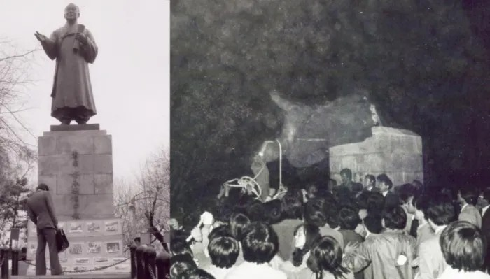
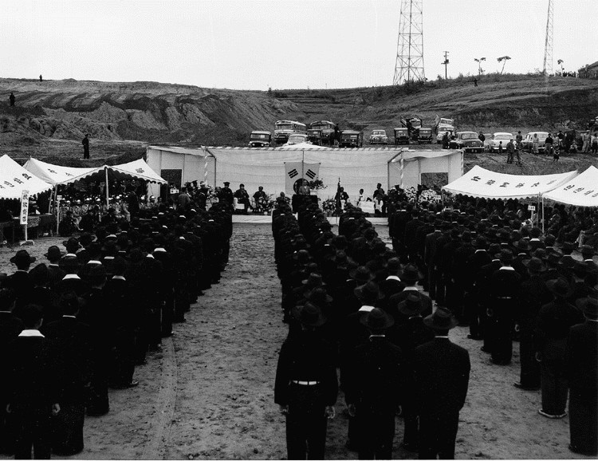

[경세사초] 이승만이 인하대를 설립했다는 극우세력의 역사왜곡
하와이 동포 돈·인천시 땅·국민 성금이 세운 대학
한인기독학원 땅은 대한인국민회, 매각은 이사회
1925년 임시의정원, 독립자금 막은 이승만 탄핵
AI경제저널=김갑봉 편집국장 | 1954년 10월 7일 인천 용현동 인하공과대학이었다. 개교기념식 단상에 이승만 대통령이 섰다. 그는 치사에서 하와이에서 건너온 학교 밑천을 "그 가난한 농장에서 번 돈"이라고 했다.
그로부터 72년이 지났다. 오는 14일 오전 11시 30분 인하대 후문 밖에서 '인하대 이승만 동상 복원위원회'가 출범식을 연다. 모임을 꾸린 학생 소모임 '인하정신'은 "인하대 설립자는 이승만"이라고 주장한다.
이승만 자신이 돈의 주인을 밝혔다. 그런데 그 돈을 그의 공으로 돌린다. 사실이 아니다. 문제의 본질은 동상이 아니다. 인하대를 세운 돈이 누구의 것이냐다.

「설립자 이승만」, 기록에 없는 이름
인하대 공식 연혁 「인하대학교의 발자취」는 1952년 이승만 대통령이 공과대학 설립을 발의했다고 적었다. 하와이 이민 50주년 기념사업이었다. 발의는 사실이다.

하지만 발의와 설립은 다르다. 같은 연혁은 재원을 넷으로 꼽았다. 한인기독학원을 처분한 값, 하와이 교포 성금, 국내 유지 성금, 국고 보조다. 이승만의 사재는 그 목록에 없다.
1954년 2월 8일 김법린 문교부 장관 담화도 같다. 재단의 출발점은 "하와이 동포들의 눈물겨운 기부금 15만불"과 정부보조금, 인천시가 기증한 교지 12만여평이었다.
국내에서는 공무원 봉급에서 5%씩 거둔 돈이 103만여환, 기업체 등이 낸 돈이 2734만여환이었다. 인천시장은 시유지 12만5173평을 내놨다.
학교를 세운 것은 동포의 돈과 인천의 땅과 국민의 성금이었다. 대통령의 몫은 지시와 행정이었다.
하와이 동포가 조성한 한인기독학원
인하대 종잣돈은 하와이 한인기독학원을 판 돈이다. 그렇다면 학원은 누가 조성했는가. 학원 땅은 대한인국민회가 댔다.
1915년 국민회 지원으로 3에이커를 샀고, 1918년 국민회 소유 엠마 기지와 여자성경학원 기지를 합쳐 9에이커가 됐다. 국민회 살림은 동포가 다달이 낸 의무금이었다.
1902년 12월 22일 제물포를 떠난 121명이 하와이 이민의 시작이었다. 동포는 사탕수수밭에서 번호표를 차고 하루 열 시간 넘게 일했다. 말 탄 감독이 채찍을 들었다.
한 달 품삯 열예닐곱 달러에서 먹고 쓰면 서너 달러가 남았다. 사진신부는 떡과 김치를 팔고 삯바느질을 했다. 그 서너 달러와 푼돈이 학원이 됐다.
이영호 인하대 사학과 교수는 2001년 논문에서 학원의 설립과 교사·기숙사 건축, 운영비가 "주로 하와이 교포들의 재정적 후원에 의존한 것"이라고 썼다.
모금에 참여한 교포가 찬성원이 됐고, 찬성원이 투표로 재산을 관리할 탁사부를 꾸렸다. 이승만은 원장이었다. 학교도 땅도 그의 재산이 아니었다.
정확한 표기는 「이승만이 세운 학교」가 아니다. 「하와이 동포가 조성하고 이승만이 원장을 맡은 학교」다.
학원 땅을 판 손은 이사회
학원은 1947년 문을 닫았다. 땅을 판 것은 이승만이 아니라 학원 이사회였다. 같은 논문에 실린 오중정 전 영사의 증언이 그렇다.
이사회는 찬반 논란을 거쳐 그 돈을 인하대 설립자금으로 넘겼다. 학원 재산을 관리한 것도 찬성원이 투표로 뽑은 탁사부였다. 원장 한 사람이 쥔 재산이 아니었다.
이사회는 1950년 땅을 팔아 13만8500달러를 마련했다. 1962년에는 하와이 기금 18만달러가 다시 서울로 건너왔다. 금액은 자료마다 조금씩 다르다. 하지만 땅을 판 손이 이사회였다는 기록은 바뀌지 않는다.
그런데도 이승만이 학원을 팔았다는 말이 퍼졌다. 한국민족문화대백과사전 「한인기독학원」 항목조차 「이승만이 이 학원을 정리하여 얻은 18만 달러」라고 적었다. 주어를 잘못 세운 한 문장이 동포의 반세기를 한 사람의 공으로 바꿨다.
「이승만이 학원을 팔아 인하대를 세웠다」는 말은 두 번 틀렸다. 학원은 그의 재산이 아니었고, 판 사람도 그가 아니었다. 남의 돈으로 지은 집을 제 집이라 하는 꼴이다.
독립자금을 막아 탄핵된 대통령
이승만과 동포의 돈 사이에는 더 오래된 기록이 있다. 1915년 이승만이 하와이 대한인국민회 실권을 쥐면서 동포 사회는 쪼개졌다. 무장투쟁을 내세운 박용만과 길이 갈렸다.
1925년 3월 대한민국임시정부 임시의정원은 임시대통령 이승만을 탄핵해 면직했다. 탄핵 결의안의 첫 증거는 하와이 교민의 인구세 중지였다.
이승만은 하와이 민단장과 부인회에 "상해로 보낼 공금을 다 정지"하라고 지시했다. 결의안은 이를 "사사로이 배를 넉넉히 하려는 필부 같은 마음의 행위"라고 적었다.
심판서는 그가 "국고 수입이 들어오는 것을 순조롭지 못하게" 했다고 적었다. 『대한민국임시정부공보』 제42호에 실린 원문이다.
한국이민사박물관은 하와이 동포가 1920년대까지 모은 독립운동 자금을 어림잡아 300만달러로 헤아린다. 떡을 팔고 삯바느질을 해 모은 돈이었다.
그런데 그 돈이 임시정부로 가는 길을 막은 사람을, 30년 뒤 같은 동포의 돈으로 세운 대학의 설립자로 부른다. 이것이 역사왜곡이다.
인하의 주인은 동포와 인천
학교 이름 인하(仁荷)는 인천의 인과 하와이의 하를 땄다. 이름이 이미 주인을 말한다.
1984년 11월 2일 밤 학생 400여명이 횃불을 들고 교정의 이승만 동상을 끌어내렸다. 우상화를 거부했다. 그 학생이 지킨 것은 대학의 주인이었다.
그 학생이 배운 이승만은 임시정부에서 탄핵된 사람이었다. 열두 해를 집권했고, 진보당 조봉암을 사법의 이름으로 죽였다. 조봉암은 2011년 재심에서 무죄를 받았다.
3·15 부정선거로 4·19를 부른 사람도 그였다. 2024년 개교 70주년에 다시 추진한 조형물 기공식은 우상화 논란 끝에 취소됐다. 학교는 대신 하와이·인하공원을 열었다.
기념할 것은 한 사람의 동상이 아니다. 사탕수수밭 동포와 인천시민이다. 인하대는 이 기록을 교정에 새겨야 한다. 그래야 남의 땀이 한 사람의 공으로 둔갑하지 않는다.
참고문헌
- 「대한민국임시정부공보」 제42호. 『대한민국임시정부자료집』 1. 국사편찬위원회 우리역사넷 「임시정부의 이승만 대통령 탄핵」. https://contents.history.go.kr/id/hm_123_0130
- 이영호(2001). 「하와이 이민과 '인하공과대학'의 설립」. 『기록학연구』 3, 139~177. 한국국가기록연구원. https://doi.org/10.20923/kjas.2001.3.139
- 인하대학교(2022). 「인하대학교의 발자취」. https://www.inha.ac.kr/sites/kr/files/2022/01%20%EC%9D%B8%ED%95%98%EB%8C%80%ED%95%99%EA%B5%90%EC%9D%98%20%EB%B0%9C%EC%9E%90%EC%B7%A8.pdf
- 한국학중앙연구원. 「한인기독학원」. 『한국민족문화대백과사전』. https://encykorea.aks.ac.kr/Article/E0061900
- 인천광역시 한국이민사박물관. 「제1전시실 하와이 이민」. https://www.incheon.go.kr/museum/MU040201
- 김갑봉. 「[인천열전48] 하와이동포, 독립운동 하며 피땀으로 인하대 설립」.
- 대법원 2011. 1. 20. 선고 2008재도11 전원합의체 판결(조봉암 재심). https://www.law.go.kr/LSW//precInfoP.do?precSeq=224141
[사진 출처]
- [사진1] 인하대학교 제공(인천투데이 2024년 9월 20일 게재 https://www.incheontoday.com/news/articleView.html?idxno=253812) / [사진2] 공유마당 「인하공대 개교식 연설」(한국정책방송원, 공공누리 제1유형) https://gongu.copyright.or.kr/gongu/wrt/wrt/view.do?wrtSn=13070835&menuNo=200023
관련기사
- 인하대, 이승만 동상 복원위 출범식·김문수 워크숍 모두 '불허'
- 12·3내란 옹호 김문수 인하대 특강 '발칵'…"극우 행사 반대"
- [동지 사냥의 역사·철학①] 노선 차이에 '배신자' 딱지, 동지를 적으로 모는 권력투쟁
- 부평·주안 국가산단 재생에 341억원…주차 493면 확충
저작권자 © AI경제저널 무단전재 및 재배포, AI학습 및 활용 금지